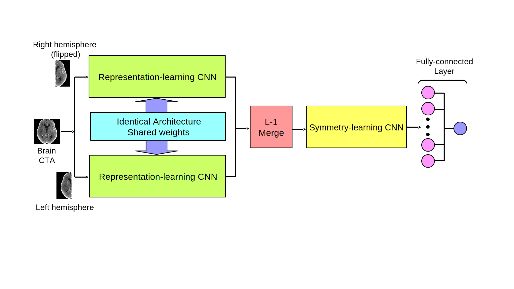

Detecting Large Vessel Occlusion and Determining Eligibility for Endovascular Therapy
The project is aimed at using machine learning methodologies for detecting Large Vessel Occlusion (LVO) in Acute Ischemic Stroke (AIS) patients using CT-Angiography (CTA) imaging. We have developed a deep learning model, DeepSymNet, which compares the feature representations of the two hemispheres of the brain to detect LVO. The overview of the model is shown here.

Fig. 1
DeepSymNet model.
We also generate activation maps for the predictions of DeepSymNet in detecting LVO using ε-Layerwise Relevance Propagation (ε-LRP) [Bach et al., 2015].